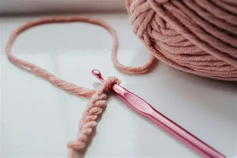
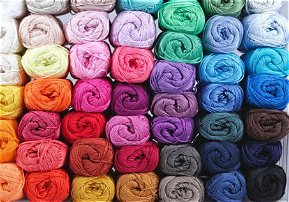

WELCOME TO BEGINNER'S CROCHET
This page is for people who want to learn how to crochet the easy way.


On this website we teach crochet for beginners step-by-step with pictures and illustrated learning
LEVEL 1
Chain stitch
- Form a loop with your yarn.
- Pull a second loop through the first.
- Place this loop on your hook and tighten gently.
- This is your starting loop.
- Hold your hook and yarn
- Hold the hook in your dominant hand (like a pencil or knife—whichever feels natural).
- With your other hand, hold the yarn so it flows smoothly from the ball.
- Wrap the yarn over your index finger to control tension.
- Yarn over (YO)
- Move the hook under the yarn from front to back.
- The yarn should now rest on top of the hook.
- Pull through the loop
- Use the hook to draw the yarn-over through the loop already on your hook.
- You now have one chain stitch.
- Repeat the motion
- Yarn over again.
- Pull through the loop on your hook.
- Each repetition adds another chain stitch.
- Count your chains
- Each “V” shape along the chain counts as one stitch.
- Patterns will tell you how many to make (e.g., “ch 20”).
LEVEL 2
Single Crochet
- Make a slip knot and place it on your hook.
- Chain 15–16 stitches loosely so the hook can pass through easily.
- Insert Hook in the Second Chain from the Hook
- The loop on your hook does not count as a chain.
- Skip the first chain and insert your hook into the second chain.
- Insert Your Hook,
Push the hook through the chain from front to back.
- The chain may stretch slightly — that’s normal.
- Yarn Over (YO):
Wrap the working yarn over your hook from back to front.
- Draw the yarn through the chain.
- You now have two loops on your hook.
- Wrap the yarn over the hook once more.
- Draw the yarn through both loops on the hook.
- You’ve completed one single crochet stitch (sc).
Starting the next stitch
- Insert your hook into the next chain
- Repeat the same sequence:
insert → yarn over → pull up a loop → yarn over → pull through two loops.
Turning for the next row
- When you reach the end of the row, chain 1 (turning chain).
- Turn your work.
- Insert your hook into the first stitch of the new row.
Back